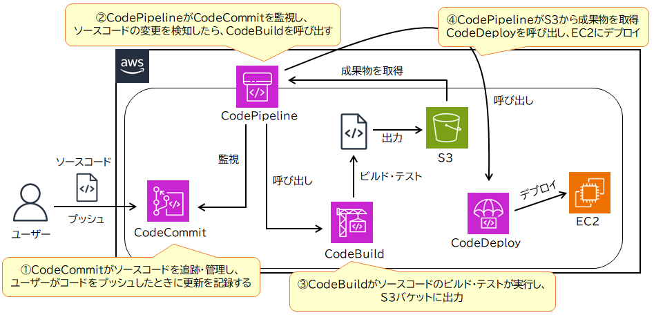

🧰 デベロッパーツール（Code シリーズ） SAA
AWSのデベロッパーツールは、開発者が効率的にコードをビルド・テスト・デプロイできるよう支援するサービス群です。 これらを連携させることで、ソフトウェア開発プロセスの自動化（CI/CD）を実現します。
主なサービス
📁 AWS CodeCommit
クラウド上のGitリポジトリサービス。Gitサーバーの構築・運用が不要で、IAMによる細かいアクセス制御と暗号化に対応。
🏗 AWS CodeBuild
ソースコードのビルド・テストを実行し、実行可能な成果物を生成するフルマネージドサービス。開発環境の構築・管理が不要。
🚀 AWS CodeDeploy
EC2・オンプレ・Lambda・ECS などへアプリケーションのデプロイを自動化する。
🔁 AWS CodePipeline
ビルド・テスト・デプロイの一連の流れを自動化し、CI/CD パイプラインを構築する。

CI / CD とは
- 継続的インテグレーション（CI）：コードをリポジトリに統合するたびに自動でビルド・テストを実行し、バグを早期発見する。
- 継続的デリバリー（CD）：CIをさらに進め、変更検出後に自動でビルド・テストし、テスト／ステージング環境へデプロイする。
🔶 試験のポイント（SAA 頻出）
- CodeCommit（Git）→ CodeBuild（ビルド/テスト）→ CodeDeploy（デプロイ）を CodePipeline でつなぐ
- 「CI/CDパイプラインを構築 → CodePipeline」